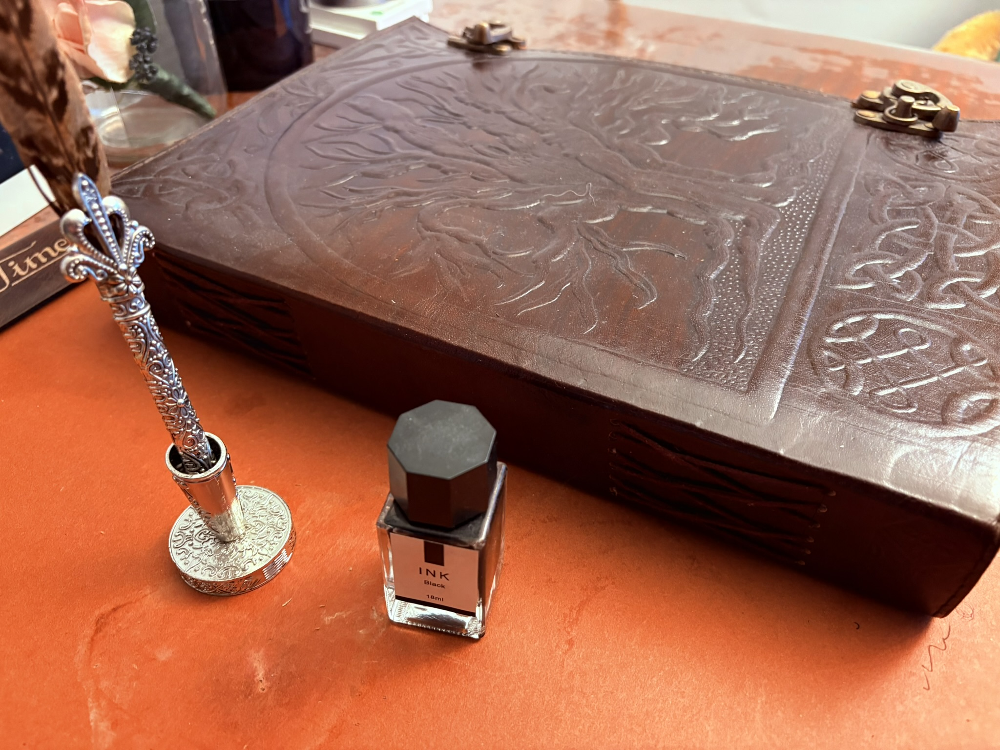
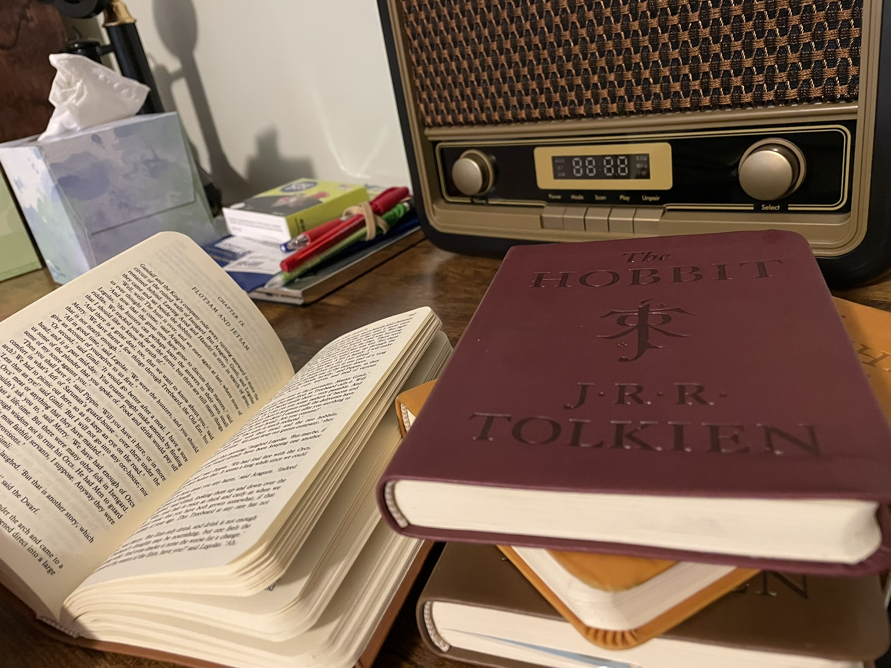

Books That Inspire
The Bible
Extreme Ownership

Faith | People | Nature | Growth
I grew up in Plainfield, Indiana, attended IU, and now work as a Solutions Architect at Eli Lilly.
Faith, people, nature, learning, and family drive everything I do.
Honor G-d, lead with integrity, be a devoted husband and father, and help others grow.
Information Systems, Management, and Business Law from IU Kelley School of Business.
Cybersecurity, Analytics, and ERP systems from IU Kelley School of Business.



